Page 1 / 1107
第 57 章 免疫系统
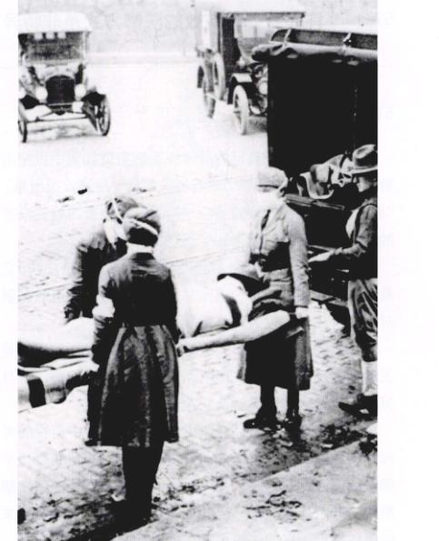
图 57.1 1918 - 1919 年的 18 个月间有大约 2200 万人死于流感，2 500 万美国人受到感染，红十字会医护人员忙于救治受感染人员。
当你想到动物如何保护自己时，你会自然而然地想到那些披着铠甲像坦克、装甲车般的动物：乌龟，犰狳等。然而，铠甲并不能抵御脊椎动物面临的最大威胁——细菌和病毒。我们生活在一个充斥着肉眼所不能看见的微小攻击者的世界上，没有任何一个脊椎动物能在不受保护的情况下长时间抵御它们的袭击。我们能幸存下来全凭我们拥有一套十分有效的防御系统。当我们提及防御系统时，我们应时刻意识到它们并不是完美无缺的。在1918 - 1919年的18个月间，有大约2200万的欧美人类死于流感（图 57.1），还有超过300万人在这年死于疟疾。如何提高我们的免疫力是当今最活跃的科研课题之一。
Page 2 / 1108
57.1 许多身体最有效的防御方式是非特异性的
57.1.1 皮肤：第一道防线
脊椎动物保护自己的身体免受感染就如同中世纪的骑士保护他们的城堡：“城墙与护城河”使进攻很困难；“巡逻队”可袭击不速之客；“哨兵”可检查四处流浪者的身份，一旦不符就通知“巡逻队”。
(1) 城墙与护城河：脊椎动物的最外一层是皮肤，它是细菌入侵遇到的第一道壁垒。呼吸道与消化道的黏膜对保护身体免受侵袭同样重要。
(2) 巡逻队：若第一道防线被突破，身体的反应是发动细胞反击，用许多细胞和化学物质杀死细菌。一旦感染发生，这种防御就会快速反应。
(3) 哨兵：最后，身体被许多在血液中巡视的可视的流动的细胞所保护，这些细胞将扫描它们遇到的每一个细胞的表面。它们属于免疫系统的一部分。一种免疫细胞攻击并杀死被视为异己的细胞，而另一种则是对特定外来细胞做标记，以便“巡逻队”来杀死它们。
1) 皮肤作为感染的屏障
皮肤是脊椎动物最大的器官，占人体体重的15%。皮肤不仅提供一套保护身体的几乎不可穿透的屏障，还因表面的化学武器增强了自身的防御功能。油腺与汗腺使皮肤表面pH值为3~5，足可抑制许多微生物的生长。汗液还提供一种溶菌酶 (lysozyme)，它能消化细菌的细胞壁。除了抵御细菌和病毒外，皮肤还防止水分的蒸发。
表皮大约有10~30个细胞厚，约合这张纸的厚度。外层的角质层 (stratum corneum) 包含一些因身体运动而挤压受损的细胞。身体对待这些损伤的策略不是修复它们，而是更换它们。细胞不断从角质层脱落，又不断被表皮最内层的基底层 (stratum basale) 产生的新细胞代替。基底层包含一些脊椎动物身体里最活跃的可分裂细胞。在基层形成的新细胞上移进入一宽广的中间棘层 (stratum spinosum layer)。在上移过程中，它们形成了使皮肤坚韧防水的角蛋白。这些新细胞最终到达角质层，存活一个月左右就脱落，又被下面的新细胞取代。银屑病是一种困扰约400万美国人的疾病，是一种慢性皮肤失调病。它的表皮细胞每3~4天更换一次，比正常细胞快8倍。
真皮 (dermis) 是表皮的15~40倍厚。它提供了对表皮的结构支持和容纳许多血管、神经末梢、肌肉和许多其他皮肤内组织。皱纹发生在真皮。而那些用来制皮带和鞋的皮则来自于很好的动物真皮。
真皮下方的皮下组织层主要由脂肪细胞组成。这些细胞具有缓冲震动、绝缘和保持体温的作用。皮下组织层的厚度在身体的不同部位有很大差异。眼睑中没有皮下组织，足底的皮下组织层则有半厘米多厚，而在身体其它部位，如臀部和大腿，皮下组织则厚得多。
2) 其他外表层
除了皮肤，还有两条细菌和病毒可能入侵的潜在路径：消化道和呼吸道。回忆一下，消化道和呼吸道都通向外界，因而它们的表面也必须抵御外界异物的入侵。微生物存在于食物中，但许多都被唾液杀死了（唾液也含溶菌酶），或被胃酸和小肠中的消化酶杀死了。微生物还存在于吸入的空气中。较小的支气管中的细胞能分泌一种黏液，使微生物在接触到温暖、潮湿易于生长的肺部之前就被捕获了。在这一通道中的其他细胞用纤毛不断将黏液排向咽部，使潜在的入侵者离开肺部进入消化道。当感染源（抗原）偶尔进入呼吸道和消化道时，身体会运用这样一些防御体系，像呕吐，痢疾，咳嗽和打喷嚏等方式来抵御病原体。
57.1.2 细胞反击：第二道防线
脊椎动物的第一道防线是很有效的，但有时也会被破坏，使入侵者进入身体。这时，身体就会启用许多非特异性细胞和化学装置来保护自己。我们称之为第二道防线。这些装置都有一个共性：它们无需辨认入侵者身份，而是对任何微生物感染都有反应。
尽管这些非特异免疫反应的细胞和化学物质在体内漫游，但它们有一个中心——淋巴系统负责这些细胞的收集和分布（第52章）。淋巴系统包括毛细淋巴管、淋巴管、淋巴结和淋巴器官（图 57.2）。它还有其他与循环相关的功能，它也储存细胞和其他物质用于免疫反应。这些细胞被分散到身体各处以抵抗感染，它们也被储存在淋巴结中，当体液流过时，其中的异体入侵者能被消灭。
1) 杀死入侵微生物的细胞
也许脊椎动物的最重要的非特异性防线是白细胞 (白血球)，它们在体内循环并攻击组织中的入侵微生物。有3种基本类型的白细胞，每一种都杀死不同的微生物。
(1) 巨噬细胞 (macrophage)：是一些形状不规则的巨大细胞，通过摄取微生物来杀死它们，很像阿米巴吞噬食物（图 57.3）。在巨噬细胞中，膜包裹含细菌的小液泡与溶酶体融合。融合可激活溶酶体，这些酶通过释放大量氧自由基来杀死微生物。巨噬细胞还吞噬病毒、细胞残片和肺泡中的灰尘颗粒。巨噬细胞不地在细胞外液中循环，它们的吞噬作用补充了那些作为肝、脾及骨髓一部分结构的吞噬细胞。在对感染做出反应时，血液中的单核细胞（一种白细胞）挤过毛细血管进入结缔组织。在感染部位，单核细胞转变成额外的巨噬细胞。
Page 3 / 1109
(2) 嗜中性粒细胞 (neutrophil)：一种类似巨噬细胞的白细胞，通过吞噬作用消化并杀死细菌。此外，嗜中性细胞还释放化学物质（其中一些与家用漂白粉相似），可杀死邻近区域内的细菌甚至嗜中性细胞本身。
(3) 自然杀伤细胞 (natural killer cell)：并不直接攻击入侵的微生物。相反，它们杀死已被病毒感染的体细胞。它们并不通过吞噬作用杀死细胞，而是在细菌的原生质膜上凿一个洞（图 57.4）。被称为穿孔素 (perforin) 的蛋白质自自然杀伤细胞释放出来，并插到靶细胞膜上，形成一个孔，水便进入到靶细胞中，使细胞膨胀并最终破裂。自然杀伤细胞也攻击癌细胞，通常是在癌细胞有机会发展成恶性肿瘤之前。这种自然杀伤细胞的“警戒守备”是身体最有效的抗癌防线。
2) 杀死入侵微生物的蛋白质
脊椎动物的细胞防御体系通过一种有效的化学防御，补体系统 (complement system) 而得到加强。这一系统大约包含20多种在血浆中循环的蛋白质。当遇到某种细菌或真菌细胞壁时，这些蛋白质聚集在一起，形成膜攻击复合体 (membrane attack complex)（图 57.5），像自然杀伤细胞那样在异体细胞膜上凿一个孔，并插入其中。水通过这些孔进入细胞，使细胞膨胀破裂。这种补体蛋白的聚集也是因抗体与入侵生物的结合而触发的，我们将在此后的部分讲到。
补体系统的蛋白能增加其他身体防线的效应。一些是通过刺激组织织胺的释放来放大炎症反应 (inflammatory response)（以后讨论），一些是通过吸引吞噬细胞进入感染区，还有一些覆盖在入侵微生物的表面，使其变粗糙，更有利于吞噬细胞与之结合。
另一类在身体防御中起重要作用的蛋白质是干扰素 (interferon)。有3种主要的干扰素：α、β、γ。几乎所有体细胞都可以产生 α 和 β 干扰素。这些多肽作为信使可使受感染细胞邻近的细胞免受感染。尽管病毒仍能穿透邻近细胞，但 α 和 β 干扰素能防止这些细胞中的病毒复制和蛋白质聚集。γ 干扰素仅由特殊的淋巴细胞和自然杀伤细胞产生。这些细胞分泌的 γ 干扰素是免疫防御系统抗感染和抗肿瘤反应的一部分，我们以后将会进一步讨论。
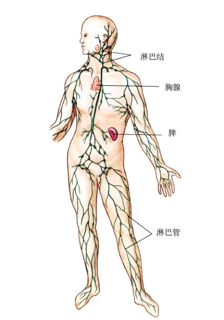
图 57.2 淋巴系统 淋巴系统包括淋巴管、淋巴结和淋巴器官——脾和胸腺。
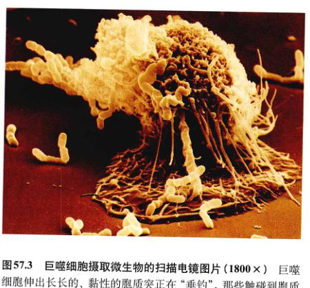
图 57.3 巨噬细胞摄取微生物的扫描电镜图片 (1800×) 巨噬细胞伸出长长的、黏性的胞质突起正在“垂钓”，那些触碰到胞质突起的细菌即被巨噬细胞“钓”到并吞噬。
Page 4 / 1110
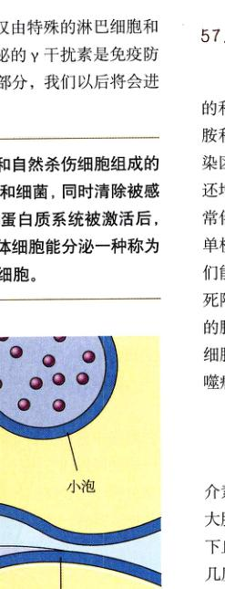
图 57.4 自然杀伤细胞如何杀死靶细胞 首先，杀伤细胞紧紧地附着在靶细胞上，引起杀伤细胞内装载穿孔素的小泡与原生质膜接触，然后将小泡里面的物质释放至靶细胞间隙。穿孔素分子插在靶细胞的质膜上，就像桶边上弧形的侧板一样，在原生质膜上形成一个孔，使水进入细胞，最终导致细胞破裂。
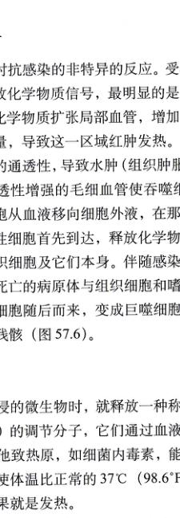
图 57.5 补体如何在细胞膜上形成一个孔 如图所示，补体蛋白形成的孔类似于自然杀伤细胞穿孔素样的复合穿孔。
57.1.3 炎症反应
炎症反应是一种对抗感染的非特异的反应。受感染的和受损伤的细胞释放化学信号物质，最明显的是组织胺和前列腺素。这些化学物质扩张局部血管，增加了感染区和受损区的血流量，导致这一区域红肿发热。它们还增加了毛细血管壁的通透性，导致水肿（组织肿胀）时常伴随感染发生。通透性增强的毛细血管使吞噬细胞、单核细胞和嗜中性细胞从血液移动向细胞外液，在那里它们能攻击细菌。嗜中性细胞首先到达，释放化学物质杀死附近的细菌以及组织细胞及它们本身。伴随感染而生的脓是已死的或正在死亡的病原体与组织细胞和嗜中性细胞的混合体。单核细胞随后而来，变成巨噬细胞，吞噬病原体及死细胞的残骸（图 57.6）。
温度反应
巨噬细胞遇到入侵的微生物时，就释放一种称为白介素-1 (interleukin-1) 的调节分子，它们通过血液流向大脑。白介素-1 和其他致热原，如细菌内毒素，能刺激脑下丘脑内的神经元，使体温比正常的 37°C (98.6°F) 高几度，温度升高的结果就是发热。
蜥蜴是一种随环境温度的变化而调节自身体温的动物。实验表明，受感染的蜥蜴易选择更温暖的环境（让自已发热）。进一步研究表明，如果禁止蜥蜴提升自己的体温，感染的蜥蜴恢复就会比较缓慢。发热可以刺激机体的防御系统，它是通过刺激机体的吞噬作用和引起肝脏、脾脏储藏铁离子，以降低血液中铁离子浓度来实现的。细菌生长时需要大量的铁离子。然而，太高的温度是有害的，因为它会导致重要酶的失活。总而言之，温度超过 39.4°C (103°F) 对人体就有危险了，若超过 40.6°C (105°F) 就可能致命了。
57.2 特异性免疫防御反应需要对抗原进行识别
57.2.1 免疫应答：第三道防线
我们中间很少有人不经任何感染就平平安安度过童年。例如水痘 (chicken pox) 就是一种我们许多人在进入青春期前就感染过的疾病。这是一种儿童病，因为我们中...
Page 5 / 1111
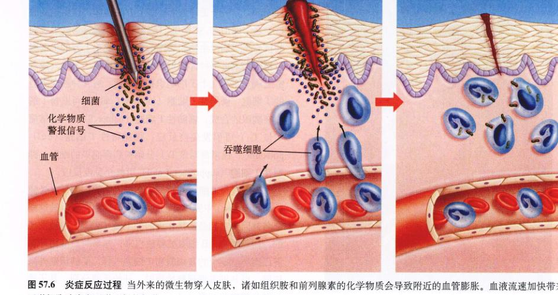
图 57.6 炎症反应过程 当外来的微生物穿入皮肤，诸如组织胺和前列腺素的化学物质会导致附近的血管膨胀。血液流速加快带来巨噬细胞攻击和吞噬入侵的细菌。
的大多数人在童年感染上以后就再也不会感染了。一旦你得过这种病，你就会对它有免疫。特异性的免疫机制提供了免疫力。
1) 免疫应答的发现
1796年，一位英国乡村医生 Edward Jenner 进行了一项标志着免疫学研究开始的实验。天花是一种当时流行的致死性疾病。Jenner 发现，那些感染了“牛痘”（很可能来源于牛）并表现轻微“出痘”症状的挤牛奶的女工很少感染天花。于是，Jenner 决定做牛痘抵御天花的试验。结果如他预计的那样，在那些感染了牛痘 (cowpox) 的人当中，许多人对天花产生了免疫力（图 57.7）。
我们现在知道，牛痘和天花来自于两种外表相似的不同的病毒。结果，感染了牛痘的病人具有了抵御天花的免疫力，通过注射一种无害微生物来抵御另一种有害微生物的方法被称为接种疫苗 (vaccination)。现在，人类就是采用类似牛痘的无害的病毒，来抵御疟疾、疱疹和其他疾病的侵害。
很多年过去了，无人知道为何将人暴露于感染介质中能获得对疾病的抵御能力。半个多世纪后，法国著名科学家路易斯·巴斯德 (Louis Pasteur) 发现了这一问题的关键。巴斯德在研究鸡霍乱时，从死鸡身上分离出一种细菌。这些细菌若接种到健康鸟的身上，会导致致病。一次出外度假时，巴斯德偶然将培养的细菌留在了外面的架子上。两周后，当他回来时，再用这些菌注时健康鸟，发现菌种的威力减弱了，被接种的鸟只是轻微患病并且随即康复。令人吃惊的是，当这些鸟被再次注射新鲜的菌种时，并没有患病。甚至注射了大剂量的有活性的鸡霍乱菌后，这些鸟仍然保持健康。显然，只要病菌没有杀死动物，某些物质就会引发免疫力。我们现在知道，一些伸出细菌细胞表面的分子能激发鸡的主动免疫。
2) 特异性免疫的重要概念
抗原 (antigen) 是能引发特异性免疫反应的分子。抗原是复杂大分子，比如蛋白质，它们对机体来说是外来物质，通常存在于病原体的表面。一个大的抗原由几部分组成，每一部分都能激活一种特殊的免疫反应。在这种情况下，不同的部分被称为抗原决定簇 (antigenic determinant site)，每一部分都是一种不同的抗原。特异性淋巴细胞在其表面有蛋白质受体，能识别抗原并引发抵御抗原或携带抗原原细胞的免疫反应。
B 淋巴细胞通过产生一种叫抗体 (antibody) 的蛋白物质来对抗原做出反应。抗体被分泌到血液及其他体液中引发体液免疫 (humoral immunity)（humor一词在这里用其古老的意义：体液）。其他淋巴细胞称为 T 细胞，不分泌抗体，而是直接攻击带特殊抗原的细胞，因而产生细胞介导的免疫 (cell-mediated immunity)。
特异性免疫通过两种方式保护机体。首先，通过暴露于病原体来获得免疫，这种方式可能感染疾病。这是获得性免疫 (acquired immunity)，就像在童年感染水痘后获得的对水痘的免疫力一样。这一过程被称为主动免疫 (active immunity)。其次，通过从其他个体获取抗体来获得免疫。这一过程在婴儿出生前就发生了，母体产生的抗体通过胎盘输送到胎儿体内。这样获得的免疫被称为被动免疫 (passive immunity)。
Page 6 / 1112
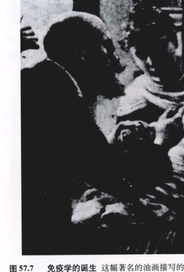
图 57.7 免疫学的诞生 这幅著名的油画描写的是18世纪90年代 Edward Jenner 医生给病人接种牛痘疫苗，防止人感染天花。
57.2.2 特异性免疫系统的细胞
身体的免疫防御机制涉及白血球 (leukocytes) 的作用。白细胞包括嗜中性细胞 (neutrophil)、嗜酸性细胞 (eosinophil)、嗜碱性细胞 (basophil) 及单核细胞 (monocyte)，和淋巴细胞 (lymphocyte) —— T 细胞和 B 细胞，它们都具有吞噬作用，但对特异性免疫反应（表 57.1）即第三道防线有着重要的作用。T 细胞介导细胞免疫，而 B 细胞则介导体液免疫。
T 细胞最初在骨髓中产生，然后转移到胸腺 (thymus)，一个正好位于心脏上方的腺体，这也是胸腺这一名字的由来。在那里，T 细胞获得了通过暴露于表面的抗原来识别微生物和病毒的本领。成千上万的 T 细胞被制造出来，每种都能识别特别异性的抗原。每个人侵者都逃脱不了被几个 T 细胞识别的命运。有4种基本类型的 T 细胞：诱导性 T 细胞 (inducer T cell)，可监督 T 细胞在胸腺的合成；辅助性 T 细胞 (helper T cell，通常简写做 TH) 可引发免疫反应；细胞毒性 T 细胞 (cell-poisoning，通常简写做 TC) 分解被病毒感染的细胞；抑制性 T 细胞 (suppressor T cell) 可终止免疫反应。
B 细胞与 T 细胞不同，它不进入胸腺，而是在骨髓 (bone marrow) 中完成自己的发育。B 细胞之所以被这样命名是因为它们最初是在鸡的腔上囊 (bursa) 中被发现的。在骨髓中，B 细胞被释放出来，并参与血液循环和淋巴循环。单个的 B 细胞和 T 细胞一样，能够识别外来抗原。当 B 细胞遇到靶抗原时，开始迅速分裂，其子代分别分化成浆细胞 (plasma cell) 和记忆细胞 (memory cell)。每一个浆细胞都是一个制造抗体的微型工厂，这些抗体像一面旗子插在抗原上，无论抗原出现在身体的哪个部位，一旦插上这面旗子，即标志着携带这些抗原的细胞要被摧毁。巴斯德观察到的免疫现象就来自于这些抗体和产生并维持存在的 B 细胞。
57.2.3 启动免疫应答
为了知道第三道防线是如何工作的，可假设你刚刚染上流感。流感病毒通过一小滴水吸入你的呼吸系统而进入你的体内。如果它们能避免被呼吸道黏膜上附着的黏液黏住（第一道防线），并且避免被巨噬细胞吞噬掉（第二道防线），病毒就会感染并杀死黏膜细胞。
在这种情况下，巨噬细胞就会引发免疫反应。巨噬细胞仔细检查每一个它遇到的细胞的表面。大多数脊椎动物的细胞表面都有一组被称为主要组织相容性复合体 (major histocompatibility complex, MHC) 的基因所产生的糖蛋白。这些蛋白被称为为“MHC蛋白” (MHC protein)，或者在人体中被称为为人白细胞抗原 (human leukocyte antigens, HLA)。产生这些 MHC 蛋白的基因具有多态性（有多种形态）。比如：人体的 MHC 蛋白就是被一些已知最具多态性的基因所编码，每一个都有 170 个等位基因。仅极少数的两个人个体会完全有相同的等位基因的组合，因而每个个体的 MHC 蛋白都是不同的，就像指纹一样。结果 MHC 蛋白就成为识别细胞的个体标志，能促使免疫系统将自己的细胞从异己细胞中识别出来。这种能力被称为为自己-非已识别 (self-versus-nonself recognition)。免疫系统的 T 细胞能通过呈现在细胞表面的 MHC 蛋白将自己和异己细胞识别出来。
Page 7 / 1113
表 57.1 免疫系统的细胞
| 细胞类型 |
图示 |
功 能 |
| 辅助性 T 细胞 |
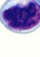
|
免疫反应的司令员，发现感染并拉响警报；引发 T 细胞和 B 细胞的反应。 |
| 诱导性 T 细胞 |
|
并不直接参与对感染的反应，调节其他 T 细胞在胸腺中的发育成熟。 |
| 细胞毒性 T 细胞 |
|
发现并杀死被感染的体细胞，并动员辅助 T 细胞。 |
| 抑制性 T 细胞 |
|
减弱 T 细胞和 B 细胞的活性，在感染被发现后平衡防御系统。 |
| B 细胞 |

|
浆细胞的前体，可特异性识别外来抗原。 |
| 浆细胞 |
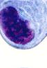
|
是生产抵抗外来特异性抗原的抗体生物化学工厂。 |
| 肥大细胞 |
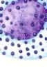
|
炎症反应的引发者，帮助白细胞到达受感染部位，分泌组织胺，在过敏反应中起重要作用。 |
| 单核细胞 |
|
巨噬细胞的前体。 |
| 巨噬细胞 |
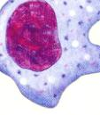
|
身体的第一道细胞防线，同时也是 B 细胞和 T 细胞的抗原呈递细胞，并可吞噬抗体黏附的细胞。 |
| 自然杀伤细胞 |
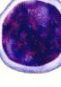
|
识别并杀死受感染的体细胞 自然杀伤细胞视并杀死一系列的入侵者；而杀伤细胞只攻击被抗体黏附的细胞。 |
Page 8 / 1114
当一个外界异物，如病毒，感染了机体，它就会被细胞吞噬并被部分消化。在细胞内，病毒抗原会被加工成小的碎片，如此这般，这些碎片被称为“抗原呈递细胞” (antigen-presenting cell)（图 57.8）。在质膜上，被加工过的病毒抗原与 MHC 蛋白形成复合物。这就使 T 细胞能够把这些黏附在细胞膜上并与 MHC 蛋白结合的抗原识别出来。
有两类 MHC 蛋白：MHC-I 存在于机体的每一个有核的细胞中，MHC-II 只存在于巨噬细胞、B 细胞和一种被称为 CD4+ 的 T 细胞亚型中（表 57.2）。这三种类型的细胞在一种免疫反应中共共同发挥作用，MHC-II 使它们能够相互识别。以前讲述的那种能摧毁感染细胞的细胞毒性 T 淋巴细胞，只能与同 MHC-I 蛋白结合的抗原相互作用。辅助 T 淋巴细胞（它的功能我们以后会讲），只能与同 MHC-II 结合的抗原相互作用。这些限制来自于辅助受体的存在，而辅助受体是与 T 细胞受体相关的蛋白质。被命名为 CD8 的辅助受体与细胞毒性 T 细胞相关（这些细胞因而也被写作 CD8+）。CD8 辅助受体只和受感染细胞的 MHC-I 蛋白作用。辅助受体 CD4 与辅助 T 细胞受体结合（这些细胞因而被写作 CD4+），并且只和另外一种淋巴细胞的 MHC-II 蛋白作用（图 57.9）。
巨噬细胞遇到身体中的外来病毒颗粒时，就对其进行部分消化，并将这些外来颗粒以及 MHC-II 蛋白组成的复合物以呈递在细胞膜的表面的形式呈现，MHC-II 蛋白与外来抗原结合是辅助 T 细胞表面受体与此复合物相互作用所需要的。同时，遇到抗原的巨噬细胞或叫抗原呈递细胞释放出一种作为化学报警信号的蛋白质——白介素-1 (interleukin-1，将会在下一节提到）。辅助 T 细胞同时引发两条平行的免疫防线对白介素-1 做出反应：T 细胞介导的细胞免疫反应和 B 细胞介导的体液免疫反应。
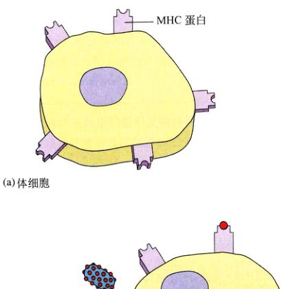
图 57.8 MHC 蛋白上的抗原呈递 (a) 体细胞的表面有 MHC 蛋白可使它们能识别自身细胞。免疫细胞不会攻击这些细胞。(b) 外来细胞或者微生物的细胞表面带有抗原，B 细胞能直接和这些游离的抗原结合并引发对发外来细胞的攻击。(c) 只有在抗原经过加工处理，并与抗原呈递细胞表面的 MHC 蛋白结合后，T 细胞才能与之结合。
Page 9 / 1115
表 57.2 免疫系统的主要细胞表面蛋白
|
免疫受体 |
MHC 蛋白 |
| 细胞类型 |
T 细胞受体 |
B 细胞受体 |
MHC-I |
MHC-II |
| B 细胞 |
- |
+ |
+ |
+ |
| CD4+ T 细胞 |
+ |
- |
+ |
+ |
| CD8+ T 细胞 |
+ |
- |
+ |
- |
| 巨噬细胞 |
- |
- |
+ |
+ |
注：CD4+ T 细胞包括诱导 T 细胞和辅助 T 细胞；CD8+ T 细胞包括细胞毒性 T 细胞和抑制性 T 细胞。+ 表明存在，- 表明缺少。
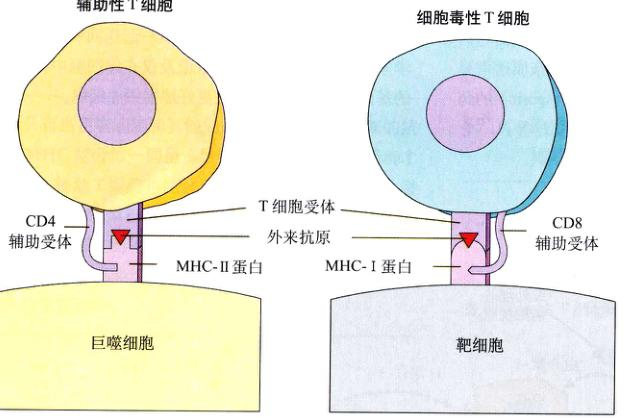
图 57.9 T 细胞与带有 MHC 蛋白的外来抗原结合 辅助 T 细胞的 CD4 辅助受体要求这些细胞与 MHC-II 蛋白相互作用。细胞毒性 T 细胞的 CD8 辅助受体要求这些细胞只能同带有 MHC-I 蛋白的细胞相互作用。
57.3 T 细胞组织发起对入侵微生物的攻击
57.3.1 T 细胞：细胞介导的免疫应答
细胞介导的免疫反应应由 T 细胞执行，能保护身体免受病毒感染和抵抗癌症的侵袭，杀死异常的和被病菌感染的体细胞。
一旦引发这个反应的辅助 T 细胞，连同外来抗原和 MHC 蛋白复合物，被巨噬细胞或其他的抗原呈递细胞呈递出来，一系列复杂的反应就被激活了。这一过程的内在机制是一种称为细胞因子 (cytokines) 的调节分子的分泌。如果是淋巴细胞分泌的，则应更确切地称为淋巴因子 (lymphokines)。
当一个细胞因子首次被发现时，它的命名是依据它的生物活性（像 B 细胞刺激因子，B cell-stimulating factor）。然而，由于每个细胞因子都有许多不同的作用，如此命名就会混淆，科学家因而统一以白介素 (interleukin) 命名，其后缀的数字用来规定一个氨基酸序列已确定的细胞因子。比如：白介素-1 由巨噬细胞分泌并能激活 T 细胞系统；B 细胞刺激因子现在被称为白介素-4，由 T 细胞分泌，促进 B 细胞的增殖和克隆；白介素-2 (interleukin-2) 由辅助 T 细胞释放，可激活细胞毒性 T 淋巴细胞。当我们讲述 T 细胞免疫反应时，我们会讨论这些细胞因子的作用。
1) 在 T 细胞反应中的细胞间相互作用
当巨噬细胞加工外来抗原时，分泌白介素-1 (interleukin-1)，它可以刺激细胞的分裂和 T 细胞的增殖（图 57.10）。一旦辅助 T 细胞被巨噬细胞呈递的抗原激活，就可以分泌巨噬细胞集落刺激因子 (macrophage colony-stimulating factor) 和 γ 干扰素等细胞因子，以提高巨噬细胞的活力。除此之外，辅助 T 细胞分泌的白介素-2，能刺激对抗原可能有特异性的细胞毒性 T 细胞的增殖。白介素-2 也能够刺激 B 细胞，我们将会下一节讲到。细胞毒性 T 细胞能消灭受感染的细胞，前提是这些细胞必须将外来抗原与 MHC-I 蛋白一同呈递（图 57.10）。
Page 10 / 1116
2) 在移植排斥反应和抗癌监视中的 T 细胞
细胞毒性 T 细胞也会攻击任何外源 MHC-I，这似乎标志着细胞受到了病毒感染。因此，即使脊椎动物没有进化出能够防御器官移植的免疫系统，它们原有的免疫系统也会攻击移植器官，并引起移植物的排斥反应。MHC 蛋白通常都是多态性的，但它们的遗传背景不同，两个个体的关系越近，它们的 MHC 蛋白的差异越小，因而它们就越有可能接纳彼此的组织，这就是为什么亲属通常是移植肾脏的来源的原因。一种环孢素 (Cyclosporin) 的药物能使细胞毒性 T 细胞失活，从而抑制移植排斥。
在肿瘤生长过程中，暴露的表面抗原可激发免疫系统将其摧毁。肿瘤抗原激活免疫系统，主要是引发了细胞毒性 T 细胞和自然杀伤细胞的攻击（图 57.11）。免疫监视 (immunological surveillance) 抵抗癌症这一概念在 20 世纪 70 年代初被引入，用来描述免疫系统在与癌症斗争时可能扮演的角色。
基因工程菌可大量生产人体干扰素，并随时对抗癌进行实验性治疗。到目前为止，干扰素已被证实是治疗一些特殊肿瘤（如淋巴癌、肾癌、黑色素瘤和乳腺癌等）的有效辅助用药。
白介素-2 (IL-2) 既能激活 B 细胞，又能激活细胞毒性 T 细胞，现在也能通过基因工程技术获得，并用于治疗。从癌症病人身上获取的特殊的淋巴细胞，经白介素-2 处理后，又同白介素-2 及 γ 干扰素一起送回病人体内。科学家同时尝试鉴别特殊的抗原及仅在癌细胞中特异表达的基因，以辅助免疫系统更好地摧毁癌细胞。
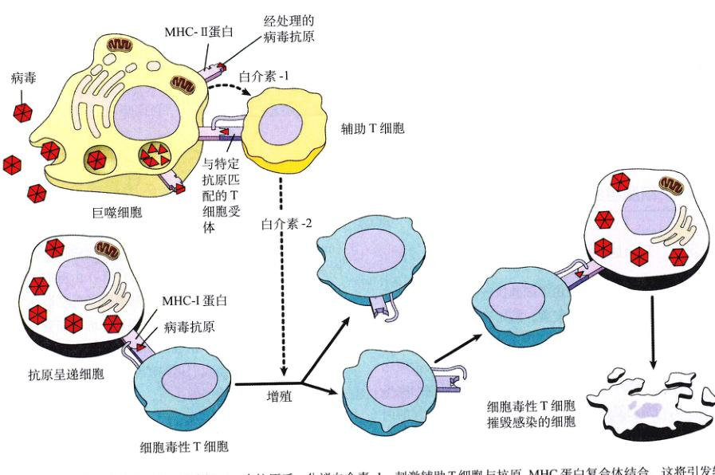
图 57.10 T 细胞免疫防疫 巨噬细胞加工一个抗原后，分泌白介素-1，刺激辅助 T 细胞与抗原-MHC 蛋白复合物结合。这将引发辅助 T 细胞分泌白介素-2，刺激细胞毒性 T 细胞的增殖。另外，当 T 细胞上的受体与抗原呈递细胞呈递的抗原匹配时，T 细胞即与该抗原-MHC 蛋白复合物结合，也刺激细胞毒性 T 细胞的增殖。细胞毒性 T 细胞随即将灭感染了抗原的体细胞。感染消除之后，抑制性 T 细胞即关闭免疫应答。
Page 11 / 1117
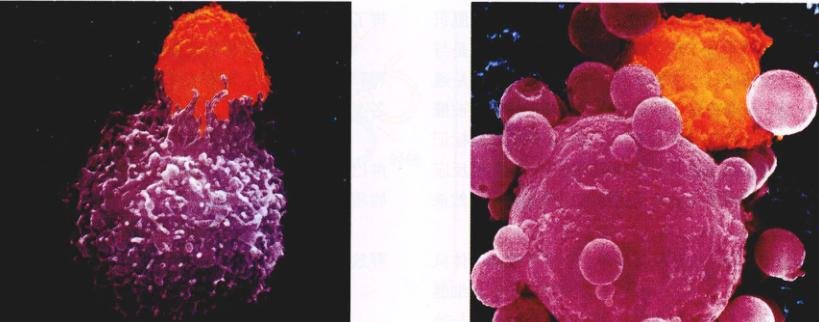
图 57.11 细胞毒性 T 细胞摧毁癌细胞 (a) 细胞毒性 T 细胞（橘黄色）与癌细胞相互作用（粉色）；(b) T 细胞识别异己的癌细胞，导致癌细胞的解体。
只有当巨噬细胞和其他的抗原呈递细胞将外来的抗原与 MHC 复合体一同呈递给辅助性 T 细胞时，后者才被激活。辅助 T 细胞也能被巨噬细胞分泌的白介素-1 激活，并分泌许多淋巴因子。白介素-2 由辅助 T 细胞分泌，它既能激活细胞毒性 T 细胞，又能激活活 B 细胞。细胞毒性 T 细胞杀死感染细胞、移植组织和癌细胞，是通过细胞免疫来实现的。
57.4 B 细胞将特殊细胞做标记，使之成为被摧毁的对象
57.4.1 B 细胞：体液免疫应答
B 细胞也对被白介素-1 激活的辅助 T 细胞发生反应。像细胞毒性 T 细胞一样，B 细胞表面也有受体蛋白，每一类 B 细胞受体都与一特异的抗原结合，但与 T 细胞不同，B 细胞能够识别游离的、未被加工处理过的抗原。
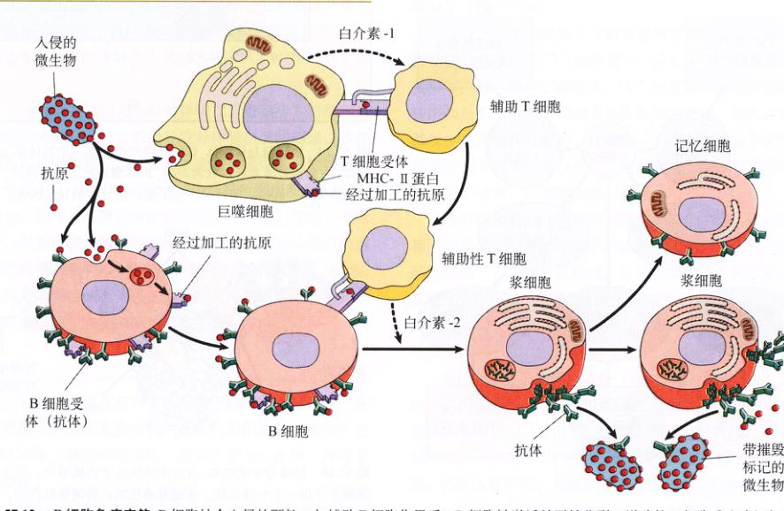
图 57.12 B 细胞免疫应答 B 细胞结合入侵的颗粒，与辅助 T 细胞作用后，B 细胞被激活并开始分裂。增殖的 B 细胞或产生记忆 B 细胞或浆细胞。这些浆细胞分泌的抗体能与入侵的微生物结合，使其被标记成为巨噬细胞的摧毁目标。
Page 12 / 1118
种类型的 B 细胞都有其各自的受体蛋白类型。B 细胞识别入侵的微生物很像 T 细胞识别受感染的细胞，但是与细胞毒性 T 细胞不同，它们本身并不进行攻击，而是通过检查，将“无身份证”的病原体进行标记作为被摧毁的对象。在免疫反应的初期，B 细胞所做的这种标记会提醒补体蛋白去攻击携带这种标记的细胞。在免疫反应的后期，由 B 细胞所做的标记则激活巨噬细胞和自然杀伤细胞。
B 细胞做标记的方法极其简单，不像 T 细胞受体只与抗原呈递细胞的抗原-MHC 蛋白复合物结合。B 细胞受体能与游离的、未经加工的抗原结合。当 B 细胞与抗原相遇时，通过内吞作用，抗原颗粒将会进入 B 细胞内并被加工。能识别特异抗原的辅助 T 细胞与 B 细胞上的抗原-MHC 蛋白复合物结合，并释放白介素-2，后者刺激 B 细胞分裂。除此之外，未经加工的抗原还可以与 B 细胞表面的抗体结合。抗原的暴露引发更多的 B 细胞增殖。B 细胞分裂产生长记忆的 B 细胞和浆细胞，后者是生产短其作用用抗体的工厂（图 57.12）。这些抗体被释放到血浆、淋巴液和其他细胞外液中。图 57.13 总结了辅助 T 细胞的作用，它们在细胞免疫和体液免疫中都发挥了关键作用。
抗体是一类被称为免疫球蛋白 (immunoglobulin)（简写为 Ig）的蛋白质，根据结构和功能又被分为许多类，各类免疫球蛋白如下：
(1) IgM：是在初次免疫反应中首先释放的抗体，是 B 淋巴细胞表面的受体，也催化凝集反应（使含有抗原的细胞连结或凝集）。
(2) IgG：是血浆中的主要抗体，在第二次免疫中释放。
(3) IgD：是 B 细胞的表面受体。
(4) IgA：是外分泌物中的主要抗体，如唾液或母乳。
(5) IgE：可促进组织胺及其他物质释放，以辅助攻击病原体。不幸的是，有时无害的抗原进入体内，它们也会进行打击，引起过敏反应，如枯草热等。
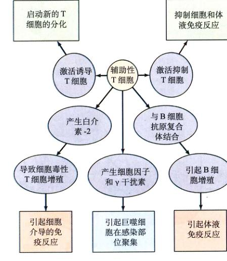
图 57.13 辅助 T 细胞的多种功能 辅助 T 细胞通过分泌淋巴因子与免疫系统其他细胞反应，参与免疫反应的多个方面。
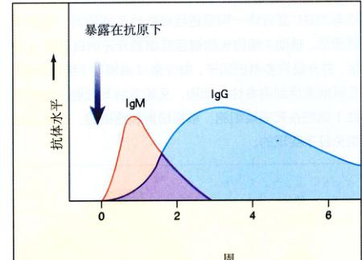
图 57.14 IgM 与 IgG 抗体 体液免疫产生的第一个抗体是 IgM 抗体，在激活补体系统时非常有数。机体遭遇抗原一周以后，产生了抗体的第一高峰，随后又产生了更广泛分布的 IgG 抗体。
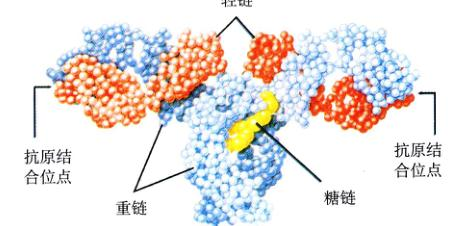
图 57.15 抗体分子的结构 在这个抗体分子的模型中，每个氨基酸分子由一个小球代替。重链是蓝色的；轻链是红色的。四条链彼此缠绕形成 Y 形，Y 的两臂上有两个相同的抗原结合位点，还有一个基部，使抗体成为免疫应答的一个特殊部分。
Page 13 / 1119
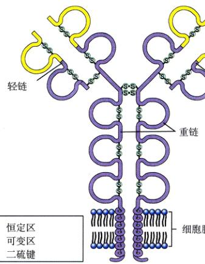
图 57.16 作为 B 细胞受体的抗体分子的结构 受体分子的特点是有一个大约 100 个氨基酸分子的超二级结构（环状），由 -S-S- 键结合在一起。每个受体有一个不变的部分（紫色）和一个可变的部分（黄色）。抗原结合在抗体可变区的末端。
每个 B 细胞表面大概有 10 万个 IgM 或 IgD 受体。与 T 细胞表面的受体不同（它们只与特殊细胞表面的抗原结合），B 细胞受体可以结合游离抗原。这就诱发了初次免疫应答。此时，IgM 抗体被释放，催化细胞分裂与克隆扩增。再次暴露在相同物质下时，细胞释放大量抗体，一般是 IgG。尽管浆细胞只有几天寿命，但它们可以产生大量抗体。事实上，抗体大约占血浆蛋白总量的 20%。制造 IgG 抗体的高峰期大约在感染 3 周后（图 57.14）出现。
当 IgM 抗体（与 IgG 抗体相比，量很少）与细胞表面的抗原结合时，它们会导致补体蛋白质的凝聚。就像我们前边提到的，这些蛋白质会在被感染细胞的细胞膜上形成小孔（图 57.5），使水进入，导致细胞膨胀。相反，当 IgG 抗体与细胞表面的抗原结合时，它们作为一个标记，引发巨噬细胞的吞噬作用。因为有些补体蛋白吸引巨噬细胞，补体蛋白的激活常伴随巨噬细胞增殖。注意：抗体并不直接杀死入侵的病原体，而是通过激活补体系统和吞噬细胞来摧毁病原体。
57.4.2 抗体
1) 抗体的结构
每个抗体分子是由 2 条相同的短的多肽链——轻链 (light chain) 和 2 条相同的长的多肽链——重链 (heavy chain) 组成的（图 57.15）。抗体分子中的 4 条肽链通过二硫键 (-S-S-) 结合在一起，形成一个“Y”形分子（图 57.16）。
通过比较不同抗体分子的氨基酸序列发现，抗体与抗原的结合位点在“Y”的两臂上，其上有一个氨基酸可变序列。对一种特定的抗体，“Y”的基部的多肽链的氨基酸序列是不变的。不同种类抗体序列的变化，绝大多数都发生在两臂的可变区。在这里，一个裂隙状分子结构就成为一个抗原的结合位点。两臂总是有完全相同的裂隙状分子结构，以便结合同一抗原。
具有相同可变片段的抗体就有相同的裂缝，可识别相同的抗原，但是抗体分子的基部可能不同。基部由重链所谓的“不可变”区组成。在动物体内有 5 种不同的重链，可以组成 5 种不同的抗体：IgM、IgG、IgA、IgD 和 IgE。我们已经讨论过 IgM 和 IgG 在体液免疫反应中的功能。
IgE 抗体分子与肥大细胞 (mast cell) 结合。IgE 抗体分子的重链基部可与肥大细胞膜上的受体结合，于是在肥大细胞表面产生 B 细胞受体。这些细胞遇到抗体特异识别的抗原时，它们就会释放组织胺，诱发炎症反应。结果血管扩张，毛细血管通透性增加，使淋巴细胞、巨噬细胞和补体蛋白更容易到达肥大细胞与抗原的结合部位。IgE 抗体与过敏反应有关，将在以后章节详细讨论。
Page 14 / 1120
IgA 抗体存在于分泌物中，比如乳汁、黏液和唾液。在乳汁中，这些抗体被认为是为哺乳的婴儿提供免疫保护作用的，因为婴儿自身的免疫系统还未发育健全。
2) 抗体的多样性
脊椎动物的免疫系统可以识别成千上万的可能存在的异己分子。尽管脊椎动物的染色体只有几百个受体编码基因，但人体 B 细胞可以合成 106 ~ 109 个不同的抗体分子。脊椎动物是怎样用几百个受体编码基因合成几百万个不同抗原受体分子的呢？
答案是：B 细胞中几百万个免疫受体基因在怀孕时没有被遗传下来，因为它们不存在于一条核酸序列上。它们由几条不同的 DNA 片段组合在一起，编译受体分子的不同部位。当生成一个抗体的时候，不同的 DNA 序列聚集在一起，形成一个组合基因（图 57.17），这个过程叫做体细胞重排 (somatic rearrangement)。比如：DNA 分子的不同组合方式可以产生 16 000 个不同的重链和 1200 个不同的轻链（小鼠抗体）。
其他两个加工过程可以生成更多的序列。首先，DNA 片段可以通过一个或两个核苷酸连接在一起，或者在转录时出现阅读框移码，于是生成完全不同的氨基酸序列。其次，当淋巴细胞分裂，克隆扩增时，DNA 连续复制会发生随机错读。两种突变过程都会导致氨基酸序列变化，这一现象被称为体细胞突变 (somatic mutation)。因为它发生在体细胞内，是 B 细胞而不是配子。
因为 B 细胞在成熟时可以重组轻链或重链，不同抗体的总数是惊人的：16 000 个重链结合方式 × 1200 个轻链结合方式 = 1900 万个不同的抗体。如果其中包含一个体细胞突变引起的改变，那么抗体的总数可以超过 2 亿！必须明白，这里只讨论了 B 细胞和它的受体，T 细胞受体的多样性与 B 细胞相同，因为它们有同样的体细胞重排与突变机制。
3) 免疫耐受性
一个成熟动物的免疫系统在正常情况下不会对自己组织的引起反应。对自身细胞的接受性称为免疫耐受性 (immunological tolerance)。胚胎的免疫系统可以既对自己又对异己分子起反应。但是在发育过程中，它失去了对自己分子反应的能力。如果外来组织在胚胎的免疫系统还未发育完全时引入，那么动物成熟后就不会将其视为异物，就会接受类似组织的移植物而不排斥。
免疫耐受性有两个主要机制：克隆缺失和克隆抑制。在胚胎、胎儿和新生儿的造血干细胞正变成成熟期，有自身抗原的大多数淋巴细胞克隆要么被消灭（克隆缺失），要么被压制（克隆抑制）。细胞“学会”识别自身抗原是因为它们遇到自身抗原的几率高。如果一个受体经常被激活，受体就认为这个细胞是自身抗原，这一淋巴细胞将被抑制或消除。所以，只有识别另类不是自身的克隆体会在发育阶段存活下来。
免疫耐受性可能被破坏，导致 B 细胞或 T 细胞（或两者）识别自身组织抗原。免疫耐受性的丧失造成自身免疫性疾病。重症肌无力就是一种自身免疫性疾病，患者体内产生对自身的骨骼肌细胞的乙酰胆碱受体作用的抗体，导致瘫痪。下面的章节将讨论自身免疫。
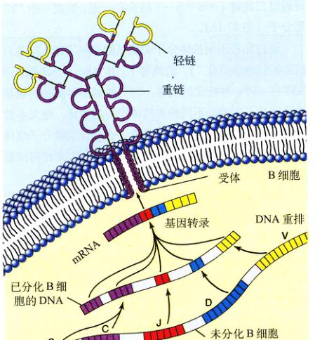
图 57.17 淋巴细胞受体分子是由复合基因编码的 DNA 不同片段编译受体结构的不同部位；C，恒定区；J，连接区；D，多样性区；V，可变区。它们组合在一起构成复合基因，编码受体。通过这些 DNA 片段的不同组合，可以制造许多多不同受体。
4) 主动免疫——克隆选择学说
我们以前讨论过，B 细胞和 T 细胞的表面有受体，可以识别并结合特异抗原。当一个特异抗原进入人体时，它一定会随机遇到带有特异受体的特异 B 细胞，从而激活免疫应答。
Page 15 / 1121
当病原体第一次侵入机体时，体内只有少数 B 细胞和 T 细胞带有可以识别入侵抗原的受体。然而，抗原与淋巴细胞表面的受体结合，会催化细胞分裂并产生克隆（一群基因相同的细胞），这一过程叫做克隆选择 (clonal selection)。初原体第一次入侵时，只有少量细胞产生免疫反应，而且反应很弱，这叫做初次免疫应答 (primary immune response)。如果初次免疫应答由 B 细胞引起，其中一些会分化成浆细胞，分泌抗体，另一路会成为记忆细胞。专门识别这一抗原的记忆细胞的克隆体会在初次免疫应答后发生，所以同一类病原体第二次入侵时，免疫应答会扩大和加强。病原体再次入侵时，免疫系统已做好了准备。由于第一次入侵，体内已产生大量可以识别这一类病原体的淋巴细胞的克隆体（图 57.19），从而引发更有效的免疫反应，叫做再次免疫应答 (secondary immune response)。
记忆细胞可以存活几十年，所以人们患过一次水痘后就极少患第二次。记忆细胞也使接种疫苗有效。疫苗接种是初次免疫，所以，再遇到真的病毒时，就会发生迅速有力的再次免疫，阻止感染。导致儿童疾病的病毒，其表面抗原多年不变，所以产生的一同抗体也多年有效。图 57.20 总结了细胞与体液免疫是怎样合作组成有效的免疫反应系统的。
57.4.3 医学诊断中的抗体
1) 血型
血型标志着红细胞表面的抗原类型。红细胞抗原在临床医学上很重要，因为输血时献血者与受血者的类型必须匹配。红细胞抗原的分类有多个体系，主要是 ABO 系统 (ABO system)。根据红细胞表面抗原种类，一个人可能是 A 型血（只含 A 抗原）、B 型血（只含 B 抗原）、AB 型血（既含 A 抗原又含 B 抗原）、O 型血（既不含 A 抗原也不含 B 抗原）。
免疫系统接受与自己同类的红细胞抗原，例如一个 A 型血的人体内不产生抗 A 抗体。令人吃惊的是，A 型血的人体内产生对 B 抗原的抗体，同样，B 型血的人体内会产生对 A 抗原的抗体。这是由于免疫系统要对付能与 A、B 抗原交叉作用的常见细菌，所以，在与这些细菌接触的情况下，A 型血的人产生与 B 抗原反应的抗体，但不会产生与 A 抗原作用的抗体。AB 型血的人对两种抗原都有免疫耐受性，所以既没有抗 A 抗体，也没有抗 B 抗体。O 型血的人对两种抗原都没有免疫耐受性，在血浆中既含有抗 A 抗体，又含有抗 B 抗体。
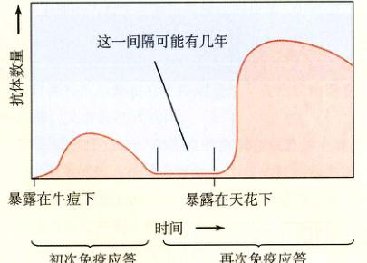
图 57.18 主动免疫的发展 Jenner 的病人对天花产生免疫是因为接种了牛痘，牛痘引发淋巴克隆产生的受体不仅能结合牛痘，还能结合天花抗原。由于克隆选择，第二次接触天花病毒时，免疫系统会很快产生大量抗体。
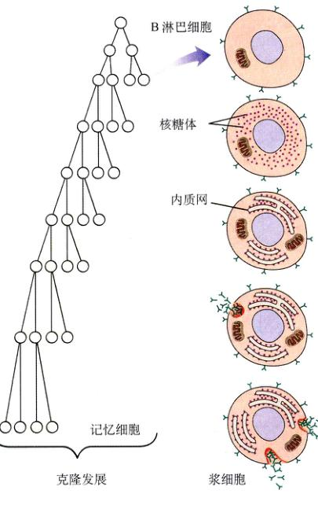
图 57.19 主动免疫的克隆选择理论 在抗原与 B 细胞表面的特异性受体结合并发生反应之后，B 细胞多分裂，产生 B 细胞克隆。其中有些细胞成为浆细胞，在初级免疫反应时分泌抗体；另一些细胞则成为记忆细胞，等待在以后遇到相同抗原时，进行再次免疫应答。
Page 16 / 1122
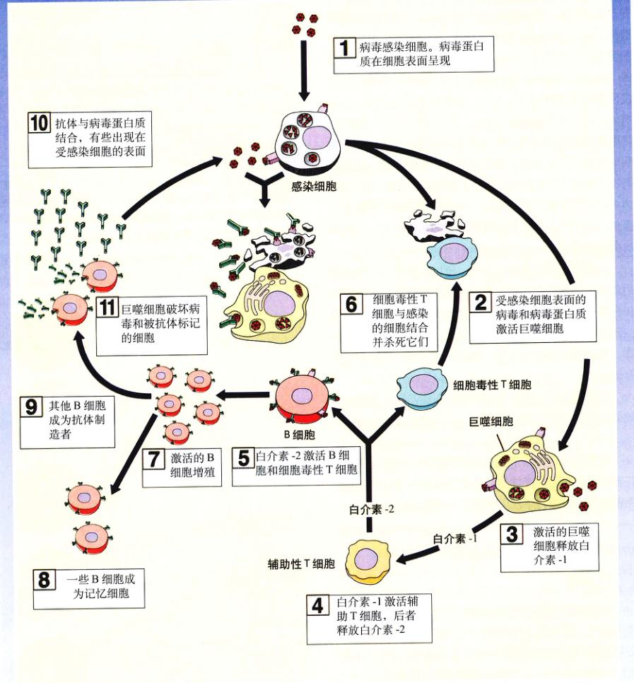
图 57.20 特异免疫反应的小结 图示展示了病毒感染细胞后，免疫系统的全过程反应，包括巨噬细胞吞噬、辅助 T 细胞激活、B 细胞和细胞毒性 T 细胞的激活及作用。